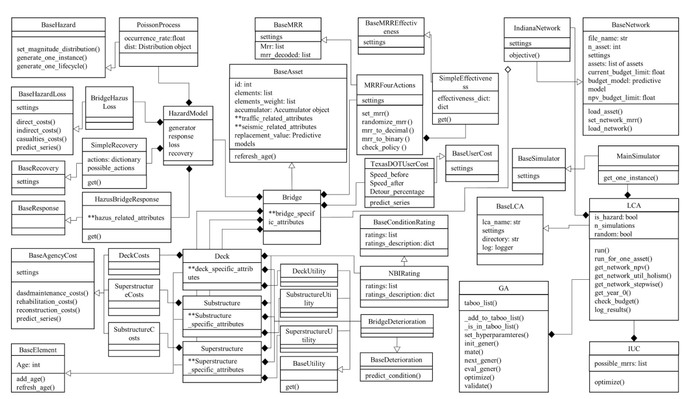

Table of Contents
Motivation
Traditional asset management systems (AMS) are like overpriced, locked-in software suites—think clunky, expensive, and about as flexible as a concrete slab. The authors saw the need for something better: a system that's affordable, adaptable, and community-driven. Here's why they set out to create GIAMS:
- Cost Barriers: Proprietary AMS solutions often come with hefty price tags, putting them out of reach for smaller agencies or developing regions.
- Rigidity: Most systems are rigid, making it hard to tweak them for specific needs like bridge deterioration models or seismic risk analysis.
- Collaboration Gap: Closed systems limit community input, slowing down innovation in infrastructure management.
- Inextensibility: Existing systems can't be easily updated or extended, forcing researchers to develop new AMS from scratch for each study.
- Language Limitations: Many current AMS use inflexible programming languages that make it difficult to integrate modern tools like machine learning models.
- Solution: GIAMS, an open-source Python platform, empowers engineers and researchers to customize and collaborate without breaking the bank, addressing diverse infrastructure challenges from bridges to buildings.
Paper: GIAMS: An Open-Source Infrastructure Asset Management System
Repository: https://github.com/vd1371/GIAMS
Why it matters: A Game-Changer for Infrastructure
GIAMS isn't just another tool; it's a paradigm shift for how we manage critical infrastructure. Here's why it's considered a game-changer:
- Cost Savings: Open-source means no licensing fees, making advanced asset management accessible to cash-strapped municipalities or developing countries.
- Global Collaboration: Hosted on GitHub, GIAMS invites contributions from engineers worldwide, speeding up innovation through shared expertise.
- Scalability: Its modular design lets users tailor solutions for specific assets (e.g., bridges in Indiana or earthquake-prone buildings in Japan).
- Python Power: Written in Python, GIAMS can integrate with modern data science tools like TensorFlow and Scikit-learn, enabling advanced machine learning applications.
- Future-Proofing: GIAMS supports emerging needs, like integrating AI for predictive maintenance or adapting to new regulations, without starting from scratch.
- Real-World Impact: Imagine a small town using GIAMS to predict bridge wear and tear, saving millions in repairs, or a research team adding a new seismic risk model that gets adopted globally. That's the power of open-source!
How it works
GIAMS is like a Lego set for infrastructure management—modular, extensible, and built for collaboration. It's hosted on GitHub and uses Git's version-control magic to manage contributions. Here's the technical breakdown:
System Architecture
GIAMS follows an object-oriented design with the builder pattern, consisting of four major modules:
-
Asset Module: The core component that models infrastructure elements like bridges or buildings
- Elements: Individual components (deck, superstructure, substructure)
- Condition Rating: Tracks asset health using various rating schemes (NBI, PONTIS, etc.)
- Deterioration Models: Predict how assets degrade over time using Markov chains
- Agency Costs: Model direct costs for maintenance, rehabilitation, and reconstruction
- User Costs: Account for community impact (traffic delays, detours)
- Network Module: Aggregates multiple assets and defines network-level constraints and objectives
- Life Cycle Analyzer: Evaluates long-term performance and costs using Monte Carlo simulation
-
Optimizer Module: Provides optimal maintenance strategies using:
- Genetic Algorithm (GA): For project-level life cycle optimization
- Incremental Utility Cost (IUC): For network-level budget allocation
Hazard Integration
GIAMS can model various hazards affecting infrastructure:
- Generator Models: Use Poisson Point Process to model hazard occurrence
- Response Models: HAZUS-based fragility curves predict asset response to hazards
- Loss Models: Estimate casualties and economic losses
- Recovery Models: Plan post-disaster restoration strategies
Real-world Applications
GIAMS demonstrates its capabilities through comprehensive examples using the Indiana bridge network with over 4,600 bridges from the National Bridge Inventory.
Project-Level Optimization
For individual assets, GIAMS uses genetic algorithms to find optimal maintenance strategies over a 20-year horizon. The system considers:
- Budget constraints and performance requirements
- Probabilistic deterioration and hazard occurrence
- Multiple bridge elements (deck, superstructure, substructure)
- Various maintenance actions (do nothing, maintain, rehabilitate, reconstruct)
Network-Level Portfolio Selection
At the network level, GIAMS uses the Incremental Utility Cost (IUC) heuristic to prioritize maintenance projects across the entire bridge network, helping agencies allocate limited budgets for maximum benefit.
Extensions and Future Applications
GIAMS can be extended for various applications:
- Seismic Retrofit Planning: Prioritize building retrofits based on seismic risk
- Structural Health Monitoring: Integrate sensor data for condition-based maintenance
- Multi-Asset Networks: Expand beyond bridges to pavements, water systems, and more
- Advanced Analytics: Incorporate machine learning for improved deterioration prediction
The platform's modular design makes it straightforward to add new deterioration models, optimization algorithms, or asset types. For example, adding a location-based deterioration model requires just a few simple steps in the existing framework.